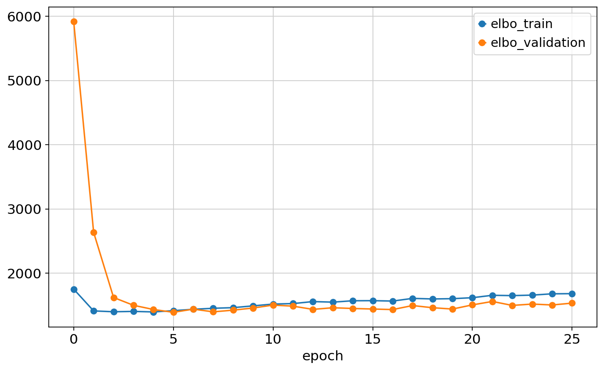
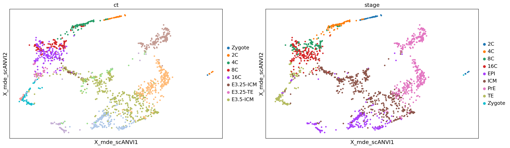

!which pip~/projects/data/Brickman/conda/envs/scvi-1.0.0/bin/pip!which pip~/projects/data/Brickman/conda/envs/scvi-1.0.0/bin/pipimport scvi
import pandas as pd
import scanpy as sc
import numpy as np
import matplotlib.pyplot as plt
from rich import print
from scib_metrics.benchmark import Benchmarker
from scvi.model.utils import mde
import warnings
from lightning_fabric.plugins.environments.slurm import PossibleUserWarning
warnings.simplefilter(action='ignore', category=PossibleUserWarning)
warnings.simplefilter(action='ignore', category=UserWarning)
warnings.simplefilter(action='ignore', category=FutureWarning)
scvi.settings.seed = 42[rank: 0] Global seed set to 42sc.set_figure_params(figsize=(10, 6))
%config InlineBackend.print_figure_kwargs={'facecolor' : "w"}
%config InlineBackend.figure_format='retina'adata = sc.read("../data/processed/01_mouse_reprocessed.h5ad")
adataAnnData object with n_obs × n_vars = 2004 × 34346
obs: 'batch', 'experiment', 'technology', 'ct', 'ct_orig', 'stage', 'timepoint', 'n_genes_by_counts', 'total_counts', 'total_counts_mt', 'pct_counts_mt', 'n_genes', 'n_counts'
var: 'gene_ids', 'gene_symbol', 'mt', 'n_cells_by_counts', 'mean_counts', 'pct_dropout_by_counts', 'total_counts', 'n_cells'
uns: 'log1p'
layers: 'counts'# sc.pp.highly_variable_genes(
# adata,
# flavor="seurat_v3",
# n_top_genes=3_000,
# layer="counts",
# batch_key="batch",
# subset=True,
# )adata.uns['log1p']["base"] = None
sc.pp.highly_variable_genes(
adata,
flavor="cell_ranger",
n_top_genes=3_000,
# batch_key="batch",
batch_key="experiment",
subset=True,
)
adata.shape(2004, 3000)import jax
jax.devices()[gpu(id=0), gpu(id=1), gpu(id=2), gpu(id=3)]adata.obs['batch_og'] = adata.obs['batch']
adata.obs['batch'] = adata.obs.experiment.cat.codes.astype(str) + "_" + adata.obs.batch.cat.codes.astype(str)
# adata.obs['batch_og'] = adata.obs['batch']
# adata.obs['batch'] = adata.obs.experiment.cat.codes.astype(str) + "_" + adata.obs.technology.cat.codes.astype(str)
# adata.obs['batch'] = adata.obs.batch.astype(str) + "_" + adata.obs.technology.cat.codes.astype(str)
# adata.obs['batch'] = adata.obs.technology.astype(str) + "_" + adata.obs.batch.str.split('_', expand=True).iloc[:, 1].astype(str)scvi.model.SCVI.setup_anndata(
adata,
layer="counts",
batch_key="batch",
# batch_key="experiment|technology",
# categorical_covariate_keys=["technology"]
)
vae = scvi.model.SCVI(adata, n_layers=2, gene_likelihood='nb')
# old settings
# vae = scvi.model.SCVI(adata, dropout_rate=0.01, n_layers=3, n_latent=10, gene_likelihood='nb') # 0.58
# other
# vae = scvi.model.SCVI(adata, dropout_rate=0.005, n_layers=2, n_latent=20, gene_likelihood='nb')
# vae = scvi.model.SCVI(adata, gene_likelihood='nb', dropout_rate=0.01, n_layers=3) # 0.57
# from tunning
# vae = scvi.model.SCVI(adata, dropout_rate=0.002, n_layers=3, gene_likelihood='zinb')
# vae = scvi.model.SCVI(adata, dropout_rate=0.005, n_layers=2, gene_likelihood='zinb')
vaeSCVI Model with the following params: n_hidden: 128, n_latent: 10, n_layers: 2, dropout_rate: 0.1, dispersion: gene, gene_likelihood: nb, latent_distribution: normal Training status: Not Trained Model's adata is minified?: False
vae.train(use_gpu=1, max_epochs=400, early_stopping=True)GPU available: True (cuda), used: True
TPU available: False, using: 0 TPU cores
IPU available: False, using: 0 IPUs
HPU available: False, using: 0 HPUs
LOCAL_RANK: 0 - CUDA_VISIBLE_DEVICES: [0,1,2,3]Epoch 386/400: 96%|███████████████████████████████████████████████████████████████████████████████████████████████████████████████████████████████████████████████████████████████████████████████████████████████████████████████████████████████████████████████▎ | 386/400 [00:51<00:01, 7.46it/s, v_num=1, train_loss_step=4.71e+3, train_loss_epoch=4.95e+3]
Monitored metric elbo_validation did not improve in the last 45 records. Best score: 5377.381. Signaling Trainer to stop.pd.concat([vae.history['elbo_train'], vae.history['elbo_validation']], axis=1).plot.line(marker='o')<Axes: xlabel='epoch'># fig, ax = plt.subplots(1, 12, figsize=[25, 4])
# for idx, key in enumerate(vae.history.keys()):
# vae.history[key].plot(title=key, ax=ax[idx])adata.obsm["X_scVI"] = vae.get_latent_representation(adata)
adata.obsm["X_mde_scVI"] = mde(adata.obsm["X_scVI"])
adata.layers['scVI_normalized'] = vae.get_normalized_expression(return_numpy=True)vae.save("../results/02_mouse_integration/scvi", overwrite=True, save_anndata=True)lvae = scvi.model.SCANVI.from_scvi_model(
vae,
adata=adata,
labels_key="ct",
unlabeled_category="Unknown",
)
lvaeScanVI Model with the following params: unlabeled_category: Unknown, n_hidden: 128, n_latent: 10, n_layers: 2, dropout_rate: 0.1, dispersion: gene, gene_likelihood: nb Training status: Not Trained Model's adata is minified?: False
max_epochs_scanvi = int(np.min([10, np.max([2, round(200 / 3.0)])]))
print(max_epochs_scanvi)
lvae.train(max_epochs=15)10
INFO Training for 15 epochs.
Epoch 15/15: 100%|████████████████████████████████████████████████████████████████████████████████████████████████████████████████████████████████████████████████████████████████████████████████████████████████████████████████████████████████████████████████████████████| 15/15 [00:04<00:00, 3.30it/s, v_num=1, train_loss_step=4.93e+3, train_loss_epoch=5.19e+3]Epoch 15/15: 100%|████████████████████████████████████████████████████████████████████████████████████████████████████████████████████████████████████████████████████████████████████████████████████████████████████████████████████████████████████████████████████████████| 15/15 [00:04<00:00, 3.06it/s, v_num=1, train_loss_step=4.93e+3, train_loss_epoch=5.19e+3]GPU available: True (cuda), used: True
TPU available: False, using: 0 TPU cores
IPU available: False, using: 0 IPUs
HPU available: False, using: 0 HPUs
LOCAL_RANK: 0 - CUDA_VISIBLE_DEVICES: [0,1,2,3]
`Trainer.fit` stopped: `max_epochs=15` reached.# fig, ax = plt.subplots(3, 3, figsize=[20, 14])
# for idx, key in enumerate(lvae.history.keys()):
# lvae.history[key].plot(title=key, ax=ax[idx // 3 , idx % 3])adata.obsm["X_scANVI"] = lvae.get_latent_representation(adata)
adata.obsm["X_mde_scANVI"] = mde(adata.obsm["X_scANVI"])
adata.layers['scANVI_normalized'] = lvae.get_normalized_expression(return_numpy=True)lvae.save("../results/02_mouse_integration/scanvi", overwrite=True, save_anndata=True)import scgenscgen.SCGEN.setup_anndata(adata, batch_key="batch", labels_key="ct")mscgen = scgen.SCGEN(adata)mscgen.train(
max_epochs=100,
batch_size=32,
early_stopping=True,
early_stopping_patience=20,
)GPU available: True (cuda), used: True
TPU available: False, using: 0 TPU cores
IPU available: False, using: 0 IPUs
HPU available: False, using: 0 HPUs
LOCAL_RANK: 0 - CUDA_VISIBLE_DEVICES: [0,1,2,3]Epoch 26/100: 26%|███████████████████████████████████████████████████████████████████ | 26/100 [00:10<00:30, 2.40it/s, v_num=1, train_loss_step=482, train_loss_epoch=372]
Monitored metric elbo_validation did not improve in the last 20 records. Best score: 1392.700. Signaling Trainer to stop.pd.concat([mscgen.history['elbo_train'], mscgen.history['elbo_validation']], axis=1).plot.line(marker='o')<Axes: xlabel='epoch'>
adata.obsm["X_scgen"] = mscgen.batch_removal().obsm['corrected_latent']
adata.obsm["X_mde_scgen"] = mde(adata.obsm["X_scgen"])
adata.layers['scgen_decoded_expr'] = mscgen.get_decoded_expression()INFO Input AnnData not setup with scvi-tools. attempting to transfer AnnData setup mscgen.save("../results/02_mouse_integration/scgen", overwrite=True, save_anndata=True)bm = Benchmarker(
adata,
batch_key="batch",
label_key="ct",
embedding_obsm_keys=["X_pca", "X_scVI", "X_scANVI", "X_scgen"],
n_jobs=-1,
)
bm.benchmark()
bm.plot_results_table(min_max_scale=False, save_dir='../results/02_mouse_integration/')Computing neighbors: 0%| | 0/4 [00:00<?, ?it/s]/home/fdb589/projects/data/Brickman/conda/envs/scvi-1.0.0/lib/python3.10/site-packages/umap/distances.py:1063: NumbaDeprecationWarning: The 'nopython' keyword argument was not supplied to the 'numba.jit' decorator. The implicit default value for this argument is currently False, but it will be changed to True in Numba 0.59.0. See https://numba.readthedocs.io/en/stable/reference/deprecation.html#deprecation-of-object-mode-fall-back-behaviour-when-using-jit for details.
@numba.jit()
/home/fdb589/projects/data/Brickman/conda/envs/scvi-1.0.0/lib/python3.10/site-packages/umap/distances.py:1071: NumbaDeprecationWarning: The 'nopython' keyword argument was not supplied to the 'numba.jit' decorator. The implicit default value for this argument is currently False, but it will be changed to True in Numba 0.59.0. See https://numba.readthedocs.io/en/stable/reference/deprecation.html#deprecation-of-object-mode-fall-back-behaviour-when-using-jit for details.
@numba.jit()
/home/fdb589/projects/data/Brickman/conda/envs/scvi-1.0.0/lib/python3.10/site-packages/umap/distances.py:1086: NumbaDeprecationWarning: The 'nopython' keyword argument was not supplied to the 'numba.jit' decorator. The implicit default value for this argument is currently False, but it will be changed to True in Numba 0.59.0. See https://numba.readthedocs.io/en/stable/reference/deprecation.html#deprecation-of-object-mode-fall-back-behaviour-when-using-jit for details.
@numba.jit()
/home/fdb589/projects/data/Brickman/conda/envs/scvi-1.0.0/lib/python3.10/site-packages/umap/umap_.py:660: NumbaDeprecationWarning: The 'nopython' keyword argument was not supplied to the 'numba.jit' decorator. The implicit default value for this argument is currently False, but it will be changed to True in Numba 0.59.0. See https://numba.readthedocs.io/en/stable/reference/deprecation.html#deprecation-of-object-mode-fall-back-behaviour-when-using-jit for details.
@numba.jit()
2023-09-23 16:36:34.725996: W tensorflow/compiler/tf2tensorrt/utils/py_utils.cc:38] TF-TRT Warning: Could not find TensorRT
Computing neighbors: 100%|██████████████████████████████████████████████████████████████████████████████████████████████████████████████████████████████████████████████████████████████████████████████████████████████████████████████████████████████████████████████████████████████████████████████████████████████████████████████████| 4/4 [00:51<00:00, 12.85s/it]
Embeddings: 0%| | 0/4 [00:00<?, ?it/s]
Metrics: 0%| | 0/10 [00:00<?, ?it/s]
Metrics: 0%| | 0/10 [00:00<?, ?it/s, Bio conservation: isolated_labels]
Metrics: 10%|████████████████████████████▏ | 1/10 [00:02<00:23, 2.65s/it, Bio conservation: isolated_labels]
Metrics: 10%|██████████████████████████▊ | 1/10 [00:02<00:23, 2.65s/it, Bio conservation: nmi_ari_cluster_labels_kmeans]
Metrics: 20%|█████████████████████████████████████████████████████▌ | 2/10 [00:04<00:19, 2.40s/it, Bio conservation: nmi_ari_cluster_labels_kmeans]
Metrics: 20%|████████████████████████████████████████████████████████▏ | 2/10 [00:04<00:19, 2.40s/it, Bio conservation: silhouette_label]
Metrics: 30%|████████████████████████████████████████████████████████████████████████████████████▎ | 3/10 [00:05<00:11, 1.64s/it, Bio conservation: silhouette_label]
Metrics: 30%|██████████████████████████████████████████████████████████████████████████████████████▍ | 3/10 [00:05<00:11, 1.64s/it, Bio conservation: clisi_knn]
Metrics: 40%|███████████████████████████████████████████████████████████████████████████████████████████████████████████████████▏ | 4/10 [00:07<00:09, 1.62s/it, Bio conservation: clisi_knn]
Metrics: 40%|████████████████████████████████████████████████████████████████████████████████████████████████████████████████▍ | 4/10 [00:07<00:09, 1.62s/it, Batch correction: silhouette_batch]
Metrics: 50%|████████████████████████████████████████████████████████████████████████████████████████████████████████████████████████████████████████████▌ | 5/10 [00:18<00:25, 5.04s/it, Batch correction: silhouette_batch]
Metrics: 50%|████████████████████████████████████████████████████████████████████████████████████████████████████████████████████████████████████████████████ | 5/10 [00:18<00:25, 5.04s/it, Batch correction: ilisi_knn]
Metrics: 60%|████████████████████████████████████████████████████████████████████████████████████████████████████████████████████████████████████████████████████████████████████████████▊ | 6/10 [00:18<00:13, 3.42s/it, Batch correction: ilisi_knn]
Metrics: 60%|█████████████████████████████████████████████████████████████████████████████████████████████████████████████████████████████████████████████████████████████████████████▊ | 6/10 [00:18<00:13, 3.42s/it, Batch correction: kbet_per_label]
Metrics: 70%|██████████████████████████████████████████████████████████████████████████████████████████████████████████████████████████████████████████████████████████████████████████████████████████████████████ | 7/10 [00:26<00:14, 4.87s/it, Batch correction: kbet_per_label]
Metrics: 70%|███████████████████████████████████████████████████████████████████████████████████████████████████████████████████████████████████████████████████████████████████████████████████████████████████▎ | 7/10 [00:26<00:14, 4.87s/it, Batch correction: graph_connectivity]
Metrics: 80%|██████████████████████████████████████████████████████████████████████████████████████████████████████████████████████████████████████████████████████████████████████████████████████████████████████████████████████████████████▍ | 8/10 [00:26<00:09, 4.87s/it, Batch correction: pcr_comparison]
Embeddings: 25%|██████████████████████████████████████████████████████████████████████████████▊ | 1/4 [00:27<01:23, 27.68s/it]
Metrics: 0%| | 0/10 [00:00<?, ?it/s]
Metrics: 0%| | 0/10 [00:00<?, ?it/s, Bio conservation: isolated_labels]
Metrics: 10%|████████████████████████████▏ | 1/10 [00:00<00:02, 4.19it/s, Bio conservation: isolated_labels]
Metrics: 10%|██████████████████████████▊ | 1/10 [00:00<00:02, 4.19it/s, Bio conservation: nmi_ari_cluster_labels_kmeans]
Metrics: 20%|█████████████████████████████████████████████████████▌ | 2/10 [00:01<00:08, 1.09s/it, Bio conservation: nmi_ari_cluster_labels_kmeans]
Metrics: 20%|████████████████████████████████████████████████████████▏ | 2/10 [00:01<00:08, 1.09s/it, Bio conservation: silhouette_label]
Metrics: 30%|██████████████████████████████████████████████████████████████████████████████████████▍ | 3/10 [00:01<00:07, 1.09s/it, Bio conservation: clisi_knn]
Metrics: 40%|████████████████████████████████████████████████████████████████████████████████████████████████████████████████▍ | 4/10 [00:01<00:06, 1.09s/it, Batch correction: silhouette_batch]
Metrics: 50%|████████████████████████████████████████████████████████████████████████████████████████████████████████████████████████████████████████████▌ | 5/10 [00:02<00:02, 1.95it/s, Batch correction: silhouette_batch]
Metrics: 50%|████████████████████████████████████████████████████████████████████████████████████████████████████████████████████████████████████████████████ | 5/10 [00:02<00:02, 1.95it/s, Batch correction: ilisi_knn]
Metrics: 60%|█████████████████████████████████████████████████████████████████████████████████████████████████████████████████████████████████████████████████████████████████████████▊ | 6/10 [00:02<00:02, 1.95it/s, Batch correction: kbet_per_label]
Metrics: 70%|██████████████████████████████████████████████████████████████████████████████████████████████████████████████████████████████████████████████████████████████████████████████████████████████████████ | 7/10 [00:04<00:01, 1.60it/s, Batch correction: kbet_per_label]
Metrics: 70%|███████████████████████████████████████████████████████████████████████████████████████████████████████████████████████████████████████████████████████████████████████████████████████████████████▎ | 7/10 [00:04<00:01, 1.60it/s, Batch correction: graph_connectivity]
Metrics: 80%|██████████████████████████████████████████████████████████████████████████████████████████████████████████████████████████████████████████████████████████████████████████████████████████████████████████████████████████████████▍ | 8/10 [00:04<00:01, 1.60it/s, Batch correction: pcr_comparison]
Embeddings: 50%|█████████████████████████████████████████████████████████████████████████████████████████████████████████████████████████████████████████████████████████████▌ | 2/4 [00:32<00:28, 14.42s/it]
Metrics: 0%| | 0/10 [00:00<?, ?it/s]
Metrics: 0%| | 0/10 [00:00<?, ?it/s, Bio conservation: isolated_labels]
Metrics: 10%|██████████████████████████▊ | 1/10 [00:00<00:00, 15.25it/s, Bio conservation: nmi_ari_cluster_labels_kmeans]
Metrics: 20%|█████████████████████████████████████████████████████▌ | 2/10 [00:01<00:04, 1.86it/s, Bio conservation: nmi_ari_cluster_labels_kmeans]
Metrics: 20%|████████████████████████████████████████████████████████▏ | 2/10 [00:01<00:04, 1.86it/s, Bio conservation: silhouette_label]
Metrics: 30%|██████████████████████████████████████████████████████████████████████████████████████▍ | 3/10 [00:01<00:03, 1.86it/s, Bio conservation: clisi_knn]
Metrics: 40%|████████████████████████████████████████████████████████████████████████████████████████████████████████████████▍ | 4/10 [00:01<00:03, 1.86it/s, Batch correction: silhouette_batch]
Metrics: 50%|████████████████████████████████████████████████████████████████████████████████████████████████████████████████████████████████████████████▌ | 5/10 [00:01<00:00, 5.11it/s, Batch correction: silhouette_batch]
Metrics: 50%|████████████████████████████████████████████████████████████████████████████████████████████████████████████████████████████████████████████████ | 5/10 [00:01<00:00, 5.11it/s, Batch correction: ilisi_knn]
Metrics: 60%|█████████████████████████████████████████████████████████████████████████████████████████████████████████████████████████████████████████████████████████████████████████▊ | 6/10 [00:01<00:00, 5.11it/s, Batch correction: kbet_per_label]
Metrics: 70%|██████████████████████████████████████████████████████████████████████████████████████████████████████████████████████████████████████████████████████████████████████████████████████████████████████ | 7/10 [00:01<00:00, 5.48it/s, Batch correction: kbet_per_label]
Metrics: 70%|███████████████████████████████████████████████████████████████████████████████████████████████████████████████████████████████████████████████████████████████████████████████████████████████████▎ | 7/10 [00:01<00:00, 5.48it/s, Batch correction: graph_connectivity]
Embeddings: 75%|████████████████████████████████████████████████████████████████████████████████████████████████████████████████████████████████████████████████████████████████████████████████████████████████████████████████████████████████████████████▎ | 3/4 [00:34<00:08, 8.54s/it]
Metrics: 0%| | 0/10 [00:00<?, ?it/s]
Metrics: 0%| | 0/10 [00:00<?, ?it/s, Bio conservation: isolated_labels]
Metrics: 10%|████████████████████████████▏ | 1/10 [00:00<00:02, 3.93it/s, Bio conservation: isolated_labels]
Metrics: 10%|██████████████████████████▊ | 1/10 [00:00<00:02, 3.93it/s, Bio conservation: nmi_ari_cluster_labels_kmeans]
Metrics: 20%|█████████████████████████████████████████████████████▌ | 2/10 [00:01<00:08, 1.07s/it, Bio conservation: nmi_ari_cluster_labels_kmeans]
Metrics: 20%|████████████████████████████████████████████████████████▏ | 2/10 [00:01<00:08, 1.07s/it, Bio conservation: silhouette_label]
Metrics: 30%|██████████████████████████████████████████████████████████████████████████████████████▍ | 3/10 [00:01<00:07, 1.07s/it, Bio conservation: clisi_knn]
Metrics: 40%|████████████████████████████████████████████████████████████████████████████████████████████████████████████████▍ | 4/10 [00:01<00:06, 1.07s/it, Batch correction: silhouette_batch]
Metrics: 50%|████████████████████████████████████████████████████████████████████████████████████████████████████████████████████████████████████████████▌ | 5/10 [00:02<00:02, 1.86it/s, Batch correction: silhouette_batch]
Metrics: 50%|████████████████████████████████████████████████████████████████████████████████████████████████████████████████████████████████████████████████ | 5/10 [00:02<00:02, 1.86it/s, Batch correction: ilisi_knn]
Metrics: 60%|█████████████████████████████████████████████████████████████████████████████████████████████████████████████████████████████████████████████████████████████████████████▊ | 6/10 [00:02<00:02, 1.86it/s, Batch correction: kbet_per_label]
Metrics: 70%|██████████████████████████████████████████████████████████████████████████████████████████████████████████████████████████████████████████████████████████████████████████████████████████████████████ | 7/10 [00:03<00:01, 2.57it/s, Batch correction: kbet_per_label]
Metrics: 70%|███████████████████████████████████████████████████████████████████████████████████████████████████████████████████████████████████████████████████████████████████████████████████████████████████▎ | 7/10 [00:03<00:01, 2.57it/s, Batch correction: graph_connectivity]
Metrics: 80%|██████████████████████████████████████████████████████████████████████████████████████████████████████████████████████████████████████████████████████████████████████████████████████████████████████████████████████████████████▍ | 8/10 [00:03<00:00, 2.57it/s, Batch correction: pcr_comparison]
Embeddings: 100%|███████████████████████████████████████████████████████████████████████████████████████████████████████████████████████████████████████████████████████████████████████████████████████████████████████████████████████████████████████████████████████████████████████████████████████████████████████████████████████████| 4/4 [00:38<00:00, 9.60s/it]
INFO E3.25-ICM consists of a single batch or is too small. Skip.
INFO E3.25-TE consists of a single batch or is too small. Skip.
INFO E3.5-EPI consists of a single batch or is too small. Skip.
INFO E3.5-PrE consists of a single batch or is too small. Skip.
INFO E3.75-ICM consists of a single batch or is too small. Skip.
INFO E4.5-TE consists of a single batch or is too small. Skip.
INFO E3.25-ICM consists of a single batch or is too small. Skip.
INFO E3.25-TE consists of a single batch or is too small. Skip.
INFO E3.5-EPI consists of a single batch or is too small. Skip.
INFO E3.5-PrE consists of a single batch or is too small. Skip.
INFO E3.75-ICM consists of a single batch or is too small. Skip.
INFO E4.5-TE consists of a single batch or is too small. Skip.
INFO E3.25-ICM consists of a single batch or is too small. Skip.
INFO E3.25-TE consists of a single batch or is too small. Skip.
INFO E3.5-EPI consists of a single batch or is too small. Skip.
INFO E3.5-PrE consists of a single batch or is too small. Skip.
INFO E3.75-ICM consists of a single batch or is too small. Skip.
INFO E4.5-TE consists of a single batch or is too small. Skip.
INFO E3.25-ICM consists of a single batch or is too small. Skip.
INFO E3.25-TE consists of a single batch or is too small. Skip.
INFO E3.5-EPI consists of a single batch or is too small. Skip.
INFO E3.5-PrE consists of a single batch or is too small. Skip.
INFO E3.75-ICM consists of a single batch or is too small. Skip.
INFO E4.5-TE consists of a single batch or is too small. Skip. <plottable.table.Table at 0x7f7064eda8f0>sc.pl.pca(adata, color=['ct', 'stage'])
sc.pl.embedding(adata, color=['ct', 'stage'], basis='X_mde_scVI')
sc.pl.embedding(adata, color=['ct', 'stage'], basis='X_mde_scANVI')
sc.pl.embedding(adata, color=['ct', 'stage'], basis='X_mde_scgen')